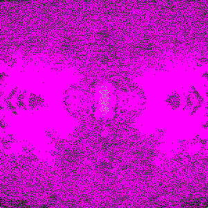
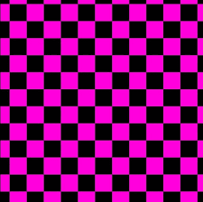

WELCOME TO THE INDEX
here you can find any of my other pages. There are many places to explore here, just hover over an orb and find your way around, if you're unsure of a path just look at the description when you hover over it!
═ ║ ╒ ╓ ╔ ╕ ╖ ╗ ╘ ╙ ╚ ╛ ╜ ╝ ╞ ╟
╠ ╡ ╢ ╣ ╤ ╥ ╦ ╧ ╨ ╩ ╪ ╫ ╬
╔═════════════════════════════════════════════╗
║ !UPDATES! !NEW STUFF! ║
╠═════════════════════════════════════════════╣
║ - Added a new orb! (placeholder) ║
║ - added (beta) desmos page, ill tweak it soon ║
║ - fully implemented the Desmos page along with some of my ║
║ projects ║
║ ║
║ ║
║ ║
║ ║
║ ║
║ ║
║ ║
╚═════════════════════════════════════════════╝


